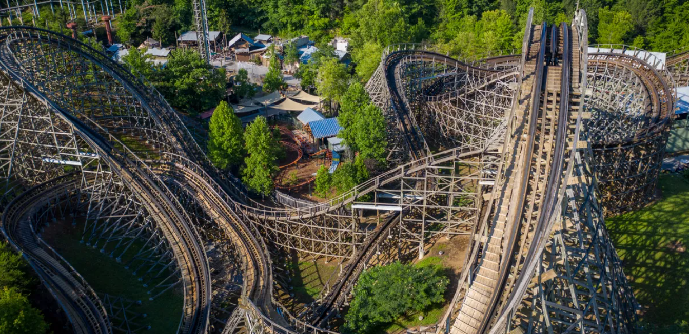
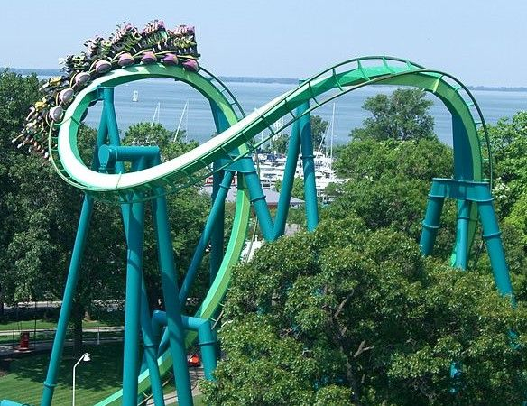
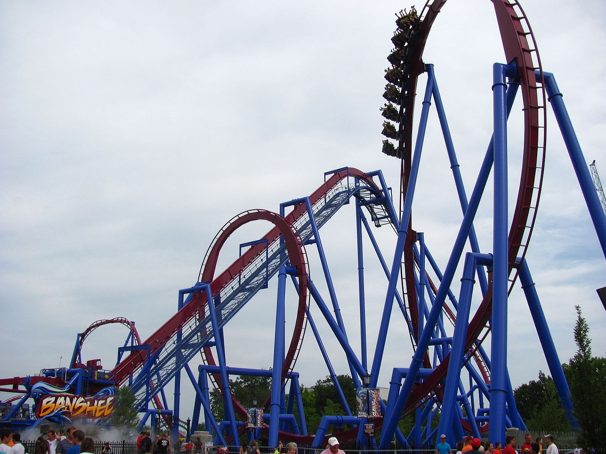
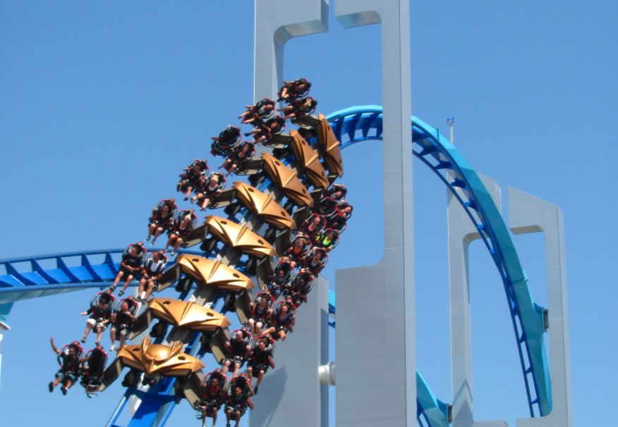
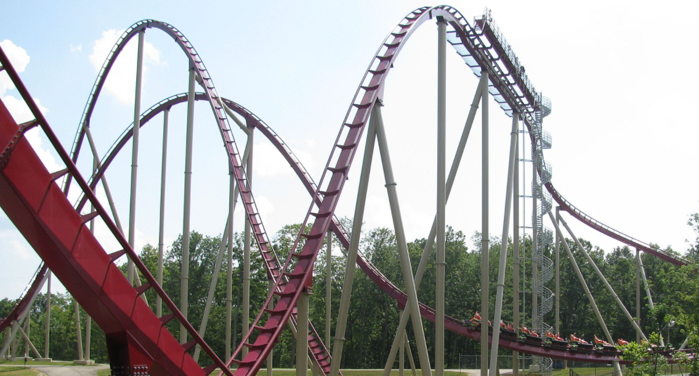

There are many different manufacturers of rides. I have decided to
share a couple of my personal favorite manufacturers.
Great Coasters International
Great Coasters International has built many wooden roller coasters
that are popular among enthusiansts. Distinguisiong characteristics of
a GCI Coaster are smooth transitions between elements with very little
straight track. Some of their rides, like El Toro, are built with
pre-fabricated track that are precision-built in their factory and
bolted together on-site. The result is a remarkably smooth ride (for a
wooden coaster) that whips around a twisted layout. Finally, their
single-bench train cars make the ride even more comfortable for riders
as the vehicles are able to effortly negotiate the coumpound banks,
dips, and turns without issue. Many GCI coasters give a similar ride.

Thunderhead at Dollywood (Pigeon Forge, TN) -
source
Bollinger & Mabillard
Bollinger & Mabillard, or simply B&M, sports an iconic box-beam steel
track design. They have many different formats of coasters, and each
gives a different ride.

B&M coasters are effortless to spot, thanks to their signature
box-beam track design. Shown: Raptor at Cedar Point, an Inverted
coaster. -
source
B&M manufactures a number of different formats. Here are descriptions
of a few:
Inverted
The ride vehicle hangs below the track. Inverted layouts are often
filled with inversions (moments were riders are upside-down). A ride
on an Inverted B&M coaseter is usually very intense. Banchee is a
example of an inverted coaster.

Banshee at Kings Island (Mason, OH) -
sourceWing Coaster
The ride vehicle is much wider than the track, with riders sitting on
the "wings" of the vehicle on either side of track. A ride on a Wing
coaster is less intense because the elements tend to be slower and
drawn-out resulting is lower forces. What makes it stand out is the
uniqueness of the ride, such as having nothing below or above the
riders, giving a view not found on other ride formats. Typically there
are elements where the ride will pass though a structure through a
rectangular window. Riders will feel like they are narrowly flying
through these structures and can experience "headchoppers" and
"footchoppers" simultaneously. Gatekeeper at Cedar Point is a perfect
example of a Wing coaster.

Gatekeeper at Cedar Point (Sandusky, OH) -
sourceHyper/Mega
The terms "hyper" and "mega" tend to be used interchangeably and
simply indicate a coaster that is taller than 200ft. These rides are
very good at long, sustained moments of airtime due to their tall
hills. They are often both the tallest and fastest roller coaster at
the parks they are installed at. They typically have no inversions.

Diamondback at Kings Island (Mason, OH) -
source
{kind=link}
#/media/File:Diamondback_back_half.jpg){kind=link}